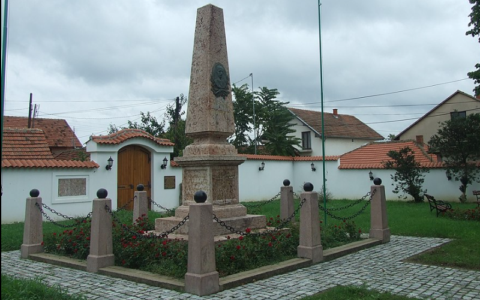

Стеван Ст.Мокрањац: Шеста Руковет
Stevan St. Mokranjac: Sixième Guirlande
"Хајдук Вељко - Hajduk Veljko"

Споменик Хајдук Вељку Петровићу у Неготину
Monument au Haïdouk Veljko Petrović à Negotin
|
|
Везе ка песмама 1 - 5 -oOo- Liens vers les chants 1 - 5

Шесту Руковет
Изводи Хор РТВ-а Београд. Диригент: Младен Јагушт (мајор)
Хор Радио-телевизије Београд ред. Младен Јагушт (1. мај)
NOTE
|
Пре него што је Мокрањац завршио компоновање 5. Руковети, написан је шестy. Посветио ју је легенди о јунаку Хајдук Вељку из његовог родног Неготина, где је 13. јула 1892. године одржана прва представа, приликом свечаног откривања споменика Хајдук Вељкy Петровићу. Прва песма "Књигу пише Мула паша" почиње певањем тенора након чега следи хор. Као контраст херојском почетку следи спора, лирска љубавна песма „Расло ми је багрем дрво“. Затим следе две кратке песничке епизоде: „Хајдук Вељко по ордији шеће” и „Кад Београд Срби узимаше”. Са „Болан ми лежи Кара Мустафа” Руковет се завршава импозантним и мелодијско-херојским финалом. Izvor: Википедиjа Првa и шестa песма су првобитно биле песме које је Иван Драгашевић компоновао за "jуначкy игру" намењену Народном позоришту у Београду које је почело са радом 1863. године. То произилази из следећег извода из студије Ђорђа Перића из 1995. године посвећене „Позоришним песмама у записима мелографа XIX века": |

|
Avant que Mokranjac ait fini de composer sa 5ème Guirlande, il en avait commencé une sixième, dédiée au légendaire Haïdouk Velko, le héros de sa ville natale Négotine, où le morceau fut joué pour la première fois le 13 juillet 1892, lors de l'inauguration d'un monument audit Hajduk Veljko. Le premier chant "Knjigu piše Mula paša" commence par un solo de ténor suivi d'un chœur. Le chant d'amour lent et lyrique "Raslo mi je bagrem drvo" qui suit, contraste avec ce début héroïque. On a ensuite deux courts passages des chants: "Hajduk Veljko po ordiji šeće" et "Kad Beograd Srbi uzimaše". C'est sur "Bolan mi leži Kara Mustafa", que cette "Rukovet" s'achève, un finale héroïque à la fois imposant et mélodique. Source: Wikipédia Les morceaux 1 et 6 étaient à l'origine des chansons composées par Ivan Dragašević pour un drame héroïque destiné au nouveau Théâtre National de Belgrade qui commença son activité en 1863. Cela ressort de l'extrait ci-après de l'étude de Georges Perić de 1995 consacrée aux "Chants de théâtre dans les écrits des musicographes du 19ème siècle": |